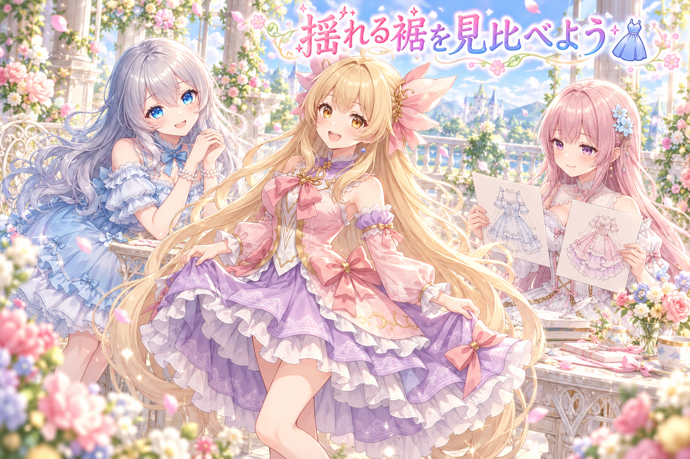
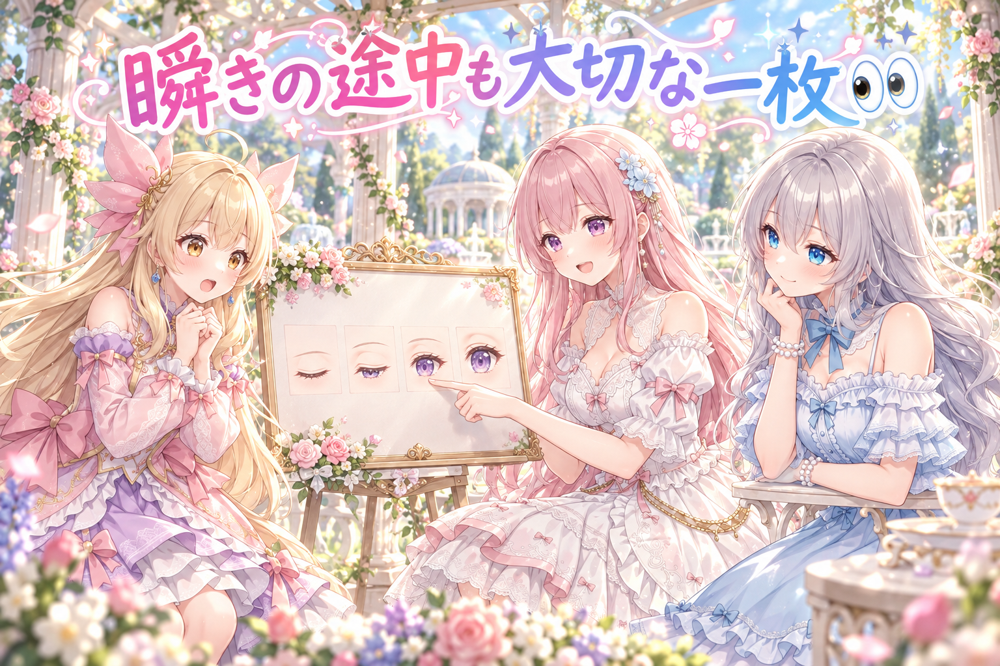
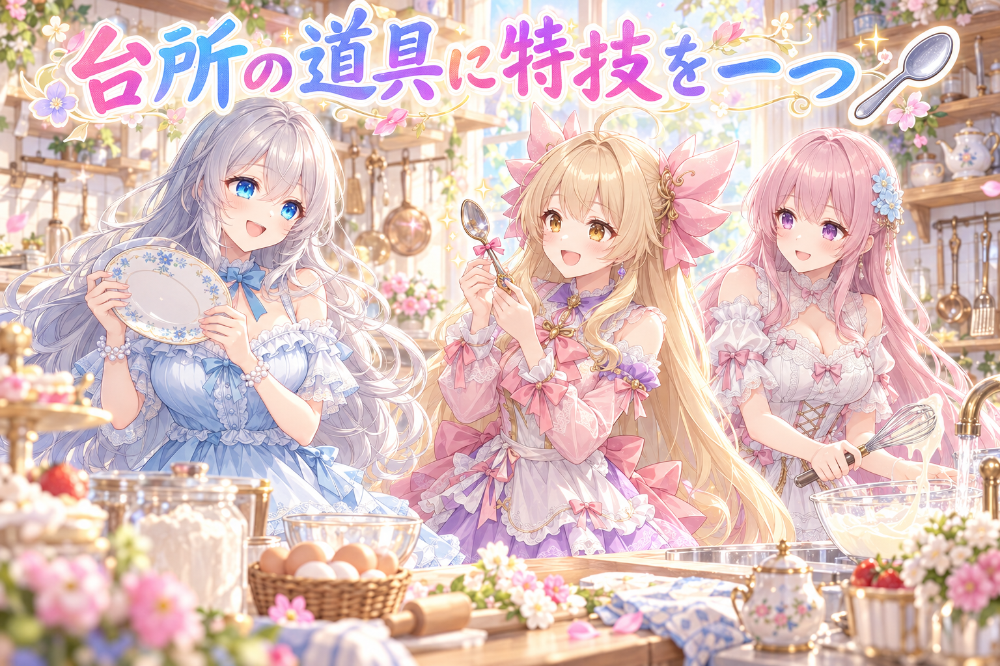

📌 3行まとめ
- アイリスの衣装の裾が動くようになり、比較画像と動画で確かめた。
- 目の切り替わりやジャンプの装飾には、残る問題も見つかった。
- オムライスの漫画を描き直し、コマを通して見た目を確かめた。
ルピナス （笑顔）
今日は、ちゃんと変わったところを一つずつ見つける回です。アイリスの裾、それから漫画のお皿。どちらも小さく見えて、大事な主役でした。
アイリス （笑顔）
あたしの裾とオムライスが、主役の座を争ってる！
フィオナ （ふつう）
裾は揺れ、お皿はそろう。今日の二つは、違うことができるようになったんですね。
アイリス （考え中）
オムライスが揺れ始めたら、お皿を押さえる係を募集しなきゃ。
1. 👗 裾の変化を、止めて動かして比べた

衣装の裾がほとんど動かない問題を直し、動きを変えた状態の比較と動画の両方で確かめました。下の段が上の段より大きく動き、動画でも腰より裾の揺れが分かるようになっています。同じ検品で、脚の付近に出ていた黒い点が消えたことも確認できました。一方、大きく動かした止め絵では、縁の見え方に小さな課題が残っています。
アイリス （笑顔）
裾がやっと、あたしの動きに参加してくれた！ ずっと見学席にいたんだもん。
ルピナス （ふつう）
直す前と同じところを比べて、動いたと確かめられたのがうれしいね。写真と動画、それぞれに見えることが違うから。
フィオナ （考え中）
大きく動かしたときの端は、止めて見ると気づく所が残っています。揺れるようになったことと、その端の見え方は別の確認でした。
アイリス （笑顔）
あたしは出演、裾も出演。端っこは接写でオーディション！
ルピナス （笑顔）
その番組、衣装の出演者紹介だけで長くなりそう。
📝 ポイント（初心者向け解説・技術メモ・まとめ）
- 初心者向け解説：揺れるカーテンを写真だけで見るのと、風が吹く動画で見るのは違います。どちらにも確かめる役目があります。
- 技術メモ：同じ区画を位置合わせして比較し、裾の変位を確認。動画では大きく動いた場面の継ぎ目も点検しました。
- ひとことまとめ：変わった所と、まだ残る所を別々に見る。
2. 👀 今日のやらかし：瞬きの途中に二つの目

目を閉じる途中の状態を細かく並べると、開いた目と閉じた目が重なり、まつ毛が薄く見える区間がありました。重なる幅は狭くなっても、途中で止まったときに見える問題が残っています。ジャンプの検品でも、頭のリボンには分かる動きがある一方、衣装のリボンは揺れが十分に見えないという結果でした。良くなった所と残った所が、はっきり分かった日でした。
アイリス （びっくり）
目を閉じる途中だけ、まつ毛が薄くなるんだよね。一瞬だからって、かくれんぼが上手すぎる！
フィオナ （ふつう）
ぱっと閉じたら見えにくくても、途中の形で止めると分かります。自然な表情にするには、その途中も大切ですね。
ルピナス （考え中）
ジャンプも同じで、動きの値が変わっていることと、見た人に揺れが伝わることは違ったの。
アイリス （考え中）
揺れてます、って自己申告するリボンはだめ？
ルピナス （笑顔）
それを聞くために、動画に説明係を増やすわけにはいかないね。
フィオナ （笑顔）
文字で説明しなくても分かる揺れ、という見方なんですね。
📝 ポイント（初心者向け解説・技術メモ・まとめ）
- 初心者向け解説：紙芝居の絵を入れ替える途中に、二枚とも透けたら気になります。途中の姿も一枚ずつ見る確認です。
- 技術メモ：目の中間形状と重なりを止め絵で点検し、ジャンプは全身動画の見え方でも評価。数値が変わったかではなく、見て分かるかで判断しています。
- ひとことまとめ：動いていることと、自然に見えることは別。
3. 🍳 漫画のお皿に、ハートがそろった
オムライスの漫画は、一枚のお皿だけを直す試しから、コマ全体を描き直す作業へ進みました。三姉妹の姿や衣装、台所の見た目をそろえて確認し、お皿のハートも検品しています。最初のコマの絵を後のコマにも手本として添え、物語の中で同じ場所と人物に見えるかを通して比べました。みんなに見てもらうのは、もう少し先のお楽しみです。
フィオナ （笑顔）
お皿のハートがきれいでも、隣のコマで衣装や台所が変わっていたら、続きに見えませんものね。
アイリス （びっくり）
一皿直したら、台所ごと模様替え。料理番組なのに引っ越し番組になっちゃう！
ルピナス （ふつう）
だから、最初の一枚も手本にして見比べたの。顔だけじゃなく、お皿や背景もお話の仲間だからね。
アイリス （笑顔）
じゃあ、お皿のハートにも出演料を。あたしが食べて払う！
フィオナ （ふつう）
アイリスちゃん、それは出演者が消えてしまいます。
ルピナス （笑顔）
裾の次はハートの出演者紹介まで必要になりました。食べる前に、まず一枚撮ろう。
📝 ポイント（初心者向け解説・技術メモ・まとめ）
- 初心者向け解説：同じ劇の写真なのに、毎回衣装が違ったら戸惑います。漫画もコマを並べて、同じお話に見えるか確かめます。
- 技術メモ：立ち絵に加え、最初の完成コマを後続コマの参照へ使用。人物・衣装・背景・お皿の形を、各コマと通しの両方で点検しました。
- ひとことまとめ：一枚のきれいさに加えて、お話としてのつながりも見る。
4. 🎁 お楽しみコーナー：名前のない道具に一問一答

今回の質問はこちら。『料理を手伝う道具に、ひとつだけ特技を付けるなら？』
ルピナス （笑顔）
私なら、盛り付ける前に一度だけ、きれいに見える角度を教えてくれるお皿かな。
アイリス （笑顔）
あたしは、つまみ食いしても量が減らないスプーン！
フィオナ （考え中）
私は、使い終わったら自分で洗われに行く泡立て器がうれしいです。
アイリス （びっくり）
それ、あたしのスプーンも連れていって！
ルピナス （笑顔）
洗っている間まで、つまみ食いを続けないでね。
みんなの台所に一つだけ特別な道具を置くなら、どんな特技がほしい？ 思いついたら教えてね。
5. 💐 今日のまとめ
- 裾の揺れの改善を、比較と動画で確かめた。
- 目の途中の形や装飾の揺れには、まだ課題が見つかった。
- オムライスの漫画をコマ全体で描き直し、見た目のつながりを確認した。
料理の写真を撮るとき、みんなは盛り付けと背景、どちらにこだわる？
💬 コメント
お名前とコメントだけで送れるよ（承認されるとみんなに表示されます🌸）
コメントを読み込み中…